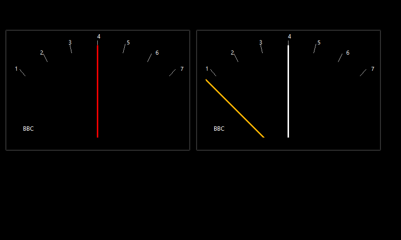
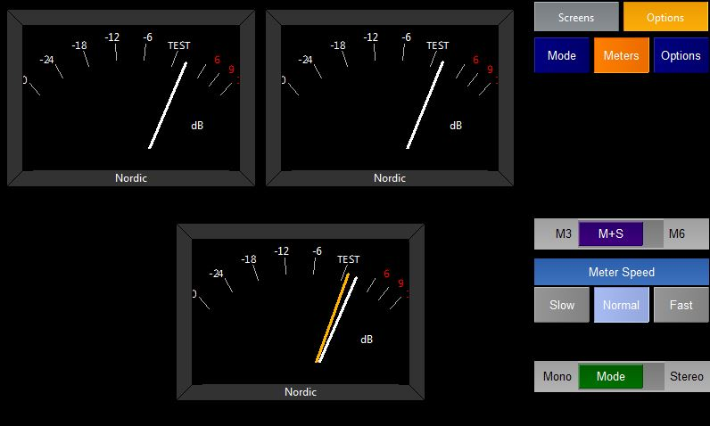

The Angle Meters plugin shows a representation of one or more moving coil meters.
In stereo mode the meters show Left and Right and Middle and Side.
In multichannel mode the meters show each incoming audio channel.
There are a number of possible meter modes which can be selected by pressing the Mode Option Selection button.
These different meters alter the scale and dynamics of the meter. It is possible to create new meters by editing ppmtypes.xml

The Meters Options let you

Allows the user to change how the Peak lines are displayed
Also allows the user to decide whether the current level and peak level is displayed as text on the meter.
The user can also Clear the meter which resets the peaks etc
Freeze the Meter which as it says will freeze the display.